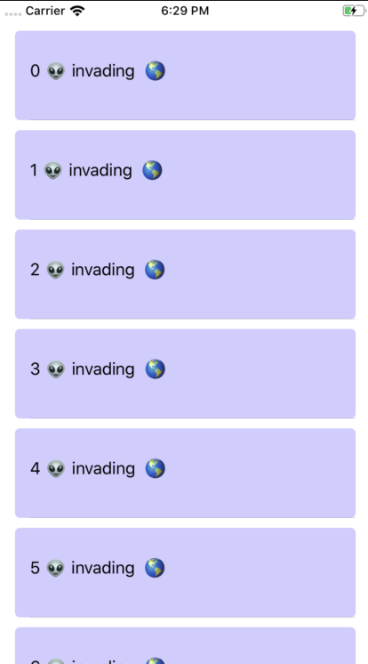

<!DOCTYPE html>
<html lang="en">
  <head>
    <meta charset="utf-8" />
    <meta name="viewport" content="width=device-width, initial-scale=1.0, maximum-scale=1.0, user-scalable=no" />

    <title>Syllabus Template Slides</title>
    <link rel="shortcut icon" href="./../../favicon.ico"/>
    <link rel="stylesheet" href="./../../dist/reveal.css" />
    <link rel="stylesheet" href="./../../dist/theme/white.css" id="theme" />
    <link rel="stylesheet" href="./../../css/highlight/zenburn.css" />
    <link rel="stylesheet" href="./../../assets/Reveal/makeschool.css" />

    <script>
      document.write('<script src="http://' + (location.host || 'localhost').split(':')[0] + ':35729/livereload.js?snipver=1"></' + 'script>');
    </script>
  </head>
  <body>
    <div class="reveal">
      <div class="slides"><section  data-markdown><script type="text/template">## Creating a UITableView with a Custom Cell (programmatically) 👽

## Adding the table

1. Open ViewController.swift and add a UITableView variable.
```swift
let table: UITableView = {
    let table = UITableView()
    table.translatesAutoresizingMaskIntoConstraints = false
    table.rowHeight = 100
    return table
}()
```

<aside class="notes"><p>We specify the <code>rowHeight</code> since we don&#39;t have a .xib file or other way of getting a starting height.</p>
<ol start="2">
<li>Add the constraints for the table. Pinning it to the edges of the screen.<pre><code class="language-swift">override func viewDidLoad() {
 super.viewDidLoad()
 setTable()
}
func setTable(){
 self.view.addSubview(table)
 table.trailingAnchor.constraint(equalTo: view.layoutMarginsGuide.trailingAnchor).isActive = true
 table.leadingAnchor.constraint(equalTo: view.layoutMarginsGuide.leadingAnchor).isActive = true
 table.topAnchor.constraint(equalTo: view.layoutMarginsGuide.topAnchor).isActive = true
 table.bottomAnchor.constraint(equalTo: view.layoutMarginsGuide.bottomAnchor).isActive = true
}
</code></pre>
</li>
</ol>
<h2 id="creating-the-cell">Creating the cell</h2>
<ol start="4">
<li>Create a new file. New Cocoa Touch Class, make it a subclass of UITableViewCell. Call it &quot;AlienCell&quot; (you&#39;ll see why later).</li>
</ol>
<p>You can ignore the <code>awakeFromNib</code> and <code>setSelected</code> methods for now.</p>
<p>Add initializers and a setup method as you would with any other custom programmatic view.</p>
<pre><code class="language-swift">//initializer for a cell
override init(style: UITableViewCell.CellStyle, reuseIdentifier: String?) {
    super.init(style: style, reuseIdentifier: reuseIdentifier)
    self.setup()
}

required init?(coder aDecoder: NSCoder) {
    super.init(coder: aDecoder)
    self.setup()
}

func setup() {

}
</code></pre>
<ol start="5">
<li>Add a background to the cell so you know how it works laying out UI elements.</li>
</ol>
<pre><code class="language-swift">let background : UIView = {
  let background = UIView()
  background.backgroundColor = #colorLiteral(red: 0.8186396956, green: 0.7955000997, blue: 1, alpha: 1)
  background.layer.cornerRadius = 5
  background.layer.masksToBounds = true
  background.translatesAutoresizingMaskIntoConstraints = false
  return background
}()
</code></pre>
<ol start="6">
<li>Add constraints to the background in the <code>setup</code> method.</li>
</ol>
<pre><code class="language-swift">self.contentView.addSubview(background)
background.topAnchor.constraint(equalTo: self.contentView.topAnchor, constant: 10).isActive = true
background.bottomAnchor.constraint(equalTo: self.contentView.bottomAnchor).isActive = true
background.leadingAnchor.constraint(equalTo: self.contentView.leadingAnchor).isActive = true
background.trailingAnchor.constraint(equalTo: self.contentView.trailingAnchor).isActive = true
</code></pre>
<ol start="7">
<li>Let the table know that you want to use this custom cell file. Add the following line to your table setup. We are registering the cell and specifying an identifier so the table knows where to find it and how to reuse it.</li>
</ol>
<pre><code class="language-swift">table.register(AlienCell.self, forCellReuseIdentifier: &quot;AlienCell&quot;)
</code></pre>
<h2 id="setting-the-data-source-and-delegate">Setting the data source and delegate</h2>
<ol start="8">
<li>Go back to your ViewController and add the following to your table (inside <code>setTable</code>)</li>
</ol>
<pre><code class="language-swift">table.delegate = self
table.dataSource = self
</code></pre>
<ol start="9">
<li>Tell your class to conform to the table&#39;s protocols. Now it looks something like this.</li>
</ol>
<pre><code class="language-swift">class ViewController: UIViewController, UITableViewDelegate, UITableViewDataSource {
...
}
</code></pre>
<p>When you are done, Xcode will tell you that you are missing some methods. Don&#39;t worry about that error, we&#39;ll include them next.</p>
<h2 id="datasource-methods">DataSource Methods</h2>
<ol start="10">
<li>Add the following array declaration as a global constant in your ViewController class, we&#39;ll use it to populate our table.</li>
</ol>
<pre><code class="language-swift">let alienArray = [String](repeating: &quot;👽 invading  🌎&quot;, count: 100)
</code></pre>
<ol start="11">
<li>Add the following methods from the data source protocol.</li>
</ol>
<pre><code class="language-swift">func tableView(_ tableView: UITableView, numberOfRowsInSection section: Int) -&gt; Int {

}
func tableView(_ tableView: UITableView, cellForRowAt indexPath: IndexPath) -&gt; UITableViewCell {

}
</code></pre>
<ol start="12">
<li>In the <code>numberOfRowsInSection</code> return the count of the <code>alienArray</code>. That&#39;s how many rows we want in the table.</li>
</ol>
<pre><code class="language-swift">return alienArray.count
</code></pre>
<ol start="13">
<li>In the <code>cellForRowAt</code> use the <code>dequeueReusableCell initializer</code> to have reusable cells.</li>
</ol>
<pre><code class="language-swift">let cell = tableView.dequeueReusableCell(withIdentifier: &quot;AlienCell&quot;, for: indexPath)
cell.textLabel?.text = &quot;\(indexPath.row) \(alienArray[indexPath.row])&quot;
return cell
</code></pre>
<p>The first line is telling the app to use the cell with the identifier we set up before, that&#39;s how it knows what cell to reuse.</p>
<p>The second line is setting the text of the cell using the default label. We include the number of the row plus  the contents of the array, using the row as index.</p>
<ol start="14">
<li>Run the app. You should now have 100 rows and you should be able to scroll to the last row and find 99 aliens invading Earth. You also see the background we added in code.</li>
</ol>
<p></p>
</aside></script></section></div>
    </div>

    <script src="./../../dist/reveal.js"></script>

    <script src="./../../plugin/markdown/markdown.js"></script>
    <script src="./../../plugin/highlight/highlight.js"></script>
    <script src="./../../plugin/zoom/zoom.js"></script>
    <script src="./../../plugin/notes/notes.js"></script>
    <script src="./../../plugin/math/math.js"></script>
    <script>
      function extend() {
        var target = {};
        for (var i = 0; i < arguments.length; i++) {
          var source = arguments[i];
          for (var key in source) {
            if (source.hasOwnProperty(key)) {
              target[key] = source[key];
            }
          }
        }
        return target;
      }

      // default options to init reveal.js
      var defaultOptions = {
        controls: true,
        progress: true,
        history: true,
        center: true,
        transition: 'default', // none/fade/slide/convex/concave/zoom
        plugins: [
          RevealMarkdown,
          RevealHighlight,
          RevealZoom,
          RevealNotes,
          RevealMath
        ]
      };

      // options from URL query string
      var queryOptions = Reveal().getQueryHash() || {};

      var options = extend(defaultOptions, {"controls":true,"progress":true,"autoPlayMedia":false,"slideNumber":"c/t","showSlideNumber":"all","controlsTutorial":true,"controlsLayout":"edges","transition":"slide","transitionSpeed":"medium","minScale":0.5,"maxScale":3}, queryOptions);
    </script>


    <script>
      Reveal.initialize(options);
    </script>
  </body>
</html>
